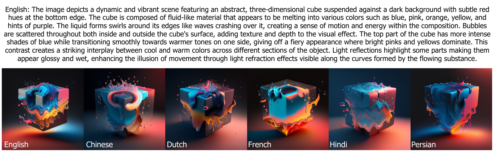
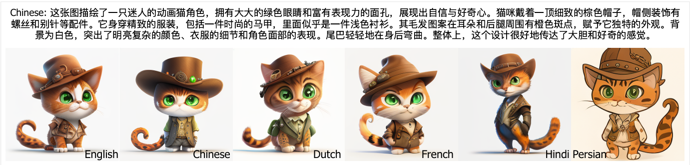

Qualitative Results
Multilingual Generation
NeoBabel produces semantically accurate and visually cohesive outputs for the same concept across all six supported languages. Below are examples where the English prompt was translated, and one image was generated for each language.


Multilingual Inpainting & Extrapolation
The model can edit and extend images using prompts in various languages without additional fine-tuning.
Inpainting across languages.

Extrapolation across languages.
Cross-Lingual (Code-Switched) Prompt Generation
A challenging test where a single prompt contains phrases from multiple languages. NeoBabel successfully integrates these multilingual instructions into a single, coherent image.

Generated from a mix of English, Dutch, and French.
Generated from a mix of Hindi, Persian, and Chinese.